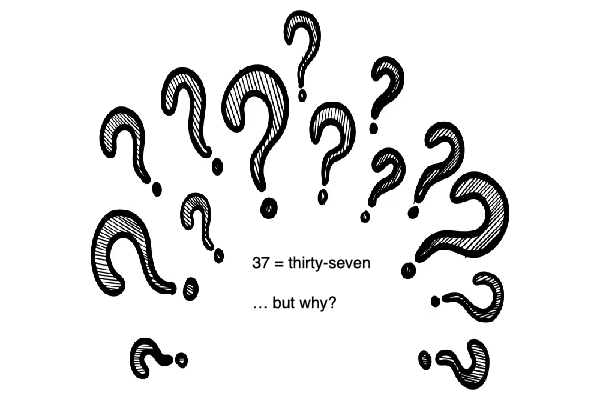
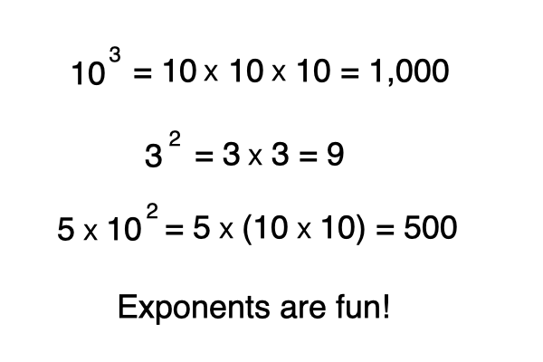
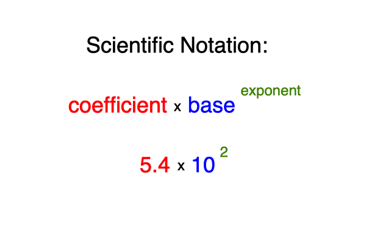
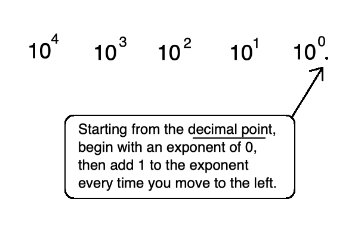
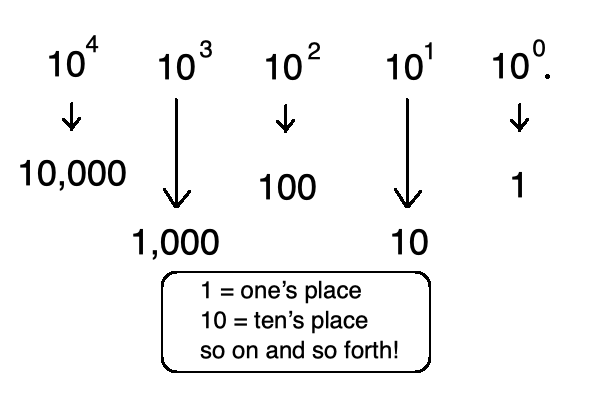
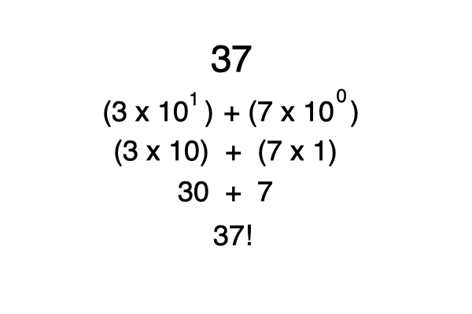
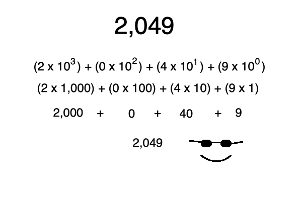
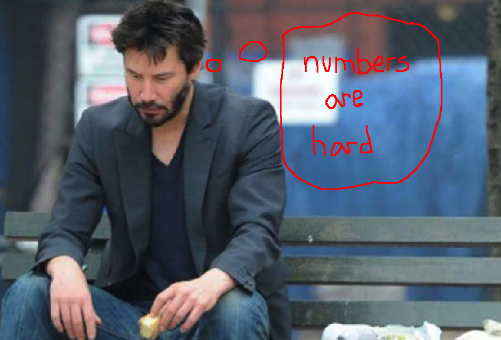

you smart good
Programming Concepts
Base-10 numbering system, continued
Now let's take a look at another concept.
Look at the number 37.
You know this number is thirty-seven.
But what makes this sequence of symbols thirty-seven?

Well, the 3 is in the ten's place, and the 7 is in the one's place . . . So that's it, right? wrong!
How do we know that the 3 is in the ten's place? What is the ten's place? What does that mean?
To understand this, we need the help of some exponents and scientific notation!

Because we are dealing with a Base-10 number system, the base number will always be 10.
The coefficient will differ based on the number we are analyzing.
And the exponent will differ based on the place in the sequence of the numbers that the specific digit is located.

To determine where the one's place and ten's place are, let's do some quick exponent math.
As we said, because this is a Base-10 numbering system, the base number will always be 10.
Starting at the right-most position, let's start with an exponent of 0.
Every time we move one space to the left, we will add 1 to the exponent.

Now let's solve:
Any base with an exponent of 0 equals 1, and any base with an exponent of 1 equals the base.
10 to the power of 0 equals 1. Therefore, that position is the one's place.
10 to the power of 1 equals 10. Therefore, that position is the ten's place.
10 to the power of 2 equals 100. Therefore, that position is the hundred's place.
We can keep this going forever, baby!

So let's go back to the number 37.
Now that we understand a little more about exponents and scientific notation, we can use this knowledge to further understand numbers in Base-10.
Since 7 is in the first position to the left of the decimal point, we can multiply that digit by 10 to the power of 0.
And since 3 is in the second position to the left of the decimal point, we can multiply that digit by 10 to the power of 1.
Add those two numbers together, and you end up with what we know as thirty-seven!

Now let's do another one. Take a look at the number 2,049. Everything is the same concept as before.
9 is in the one's place, so the exponent will be 0.
4 is in the ten's place, so the exponent will be 1.
0 is in the hundred's place, so the exponent will be 2.
And finally, 2 is in the thousand's place, so the exponent will be 3.

I know this can seem like an overly complicated way of looking at something that you've been doing your entire life, but these concepts are extremely important to understanding Base-2.
Remember:
1. starting from the decimal point, begin with an exponent of 0.
2. any number to the power of 0 equals 1.
3. when working in Base-10, the base number is always 10.
